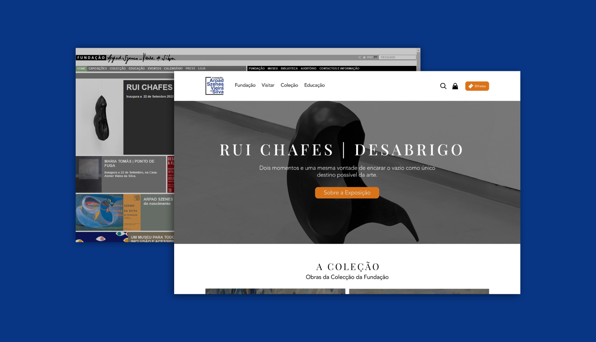
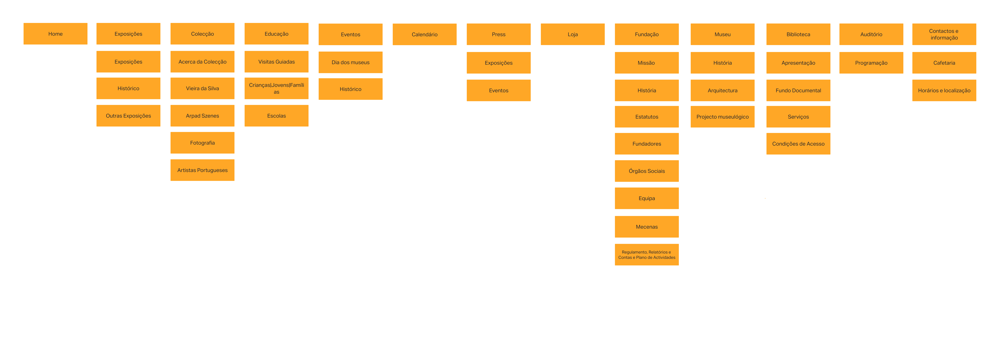
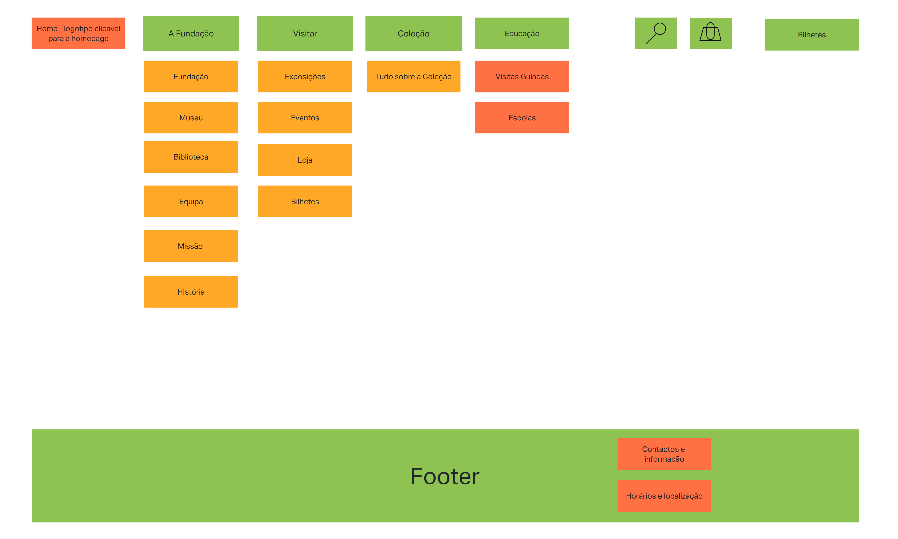
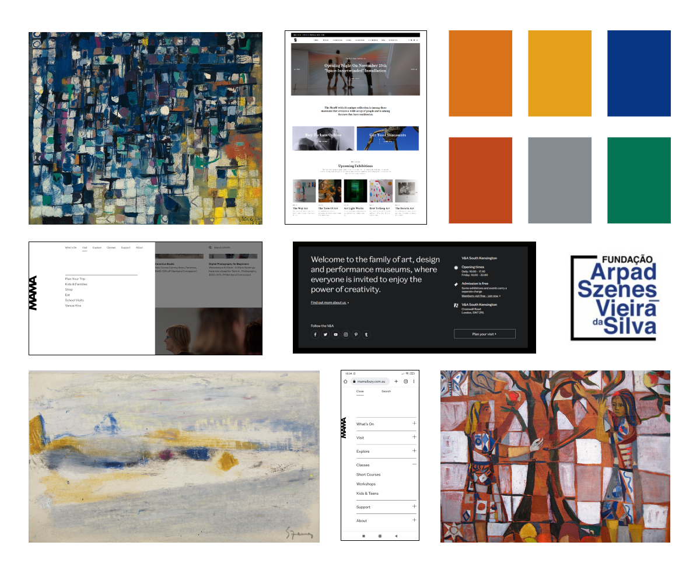
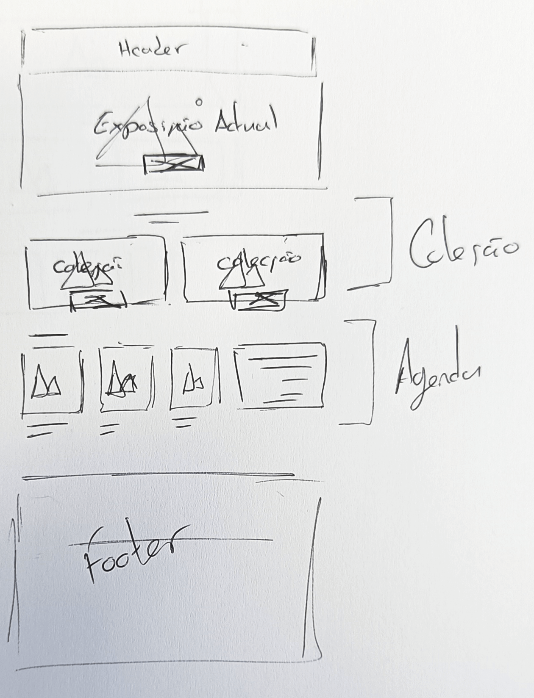
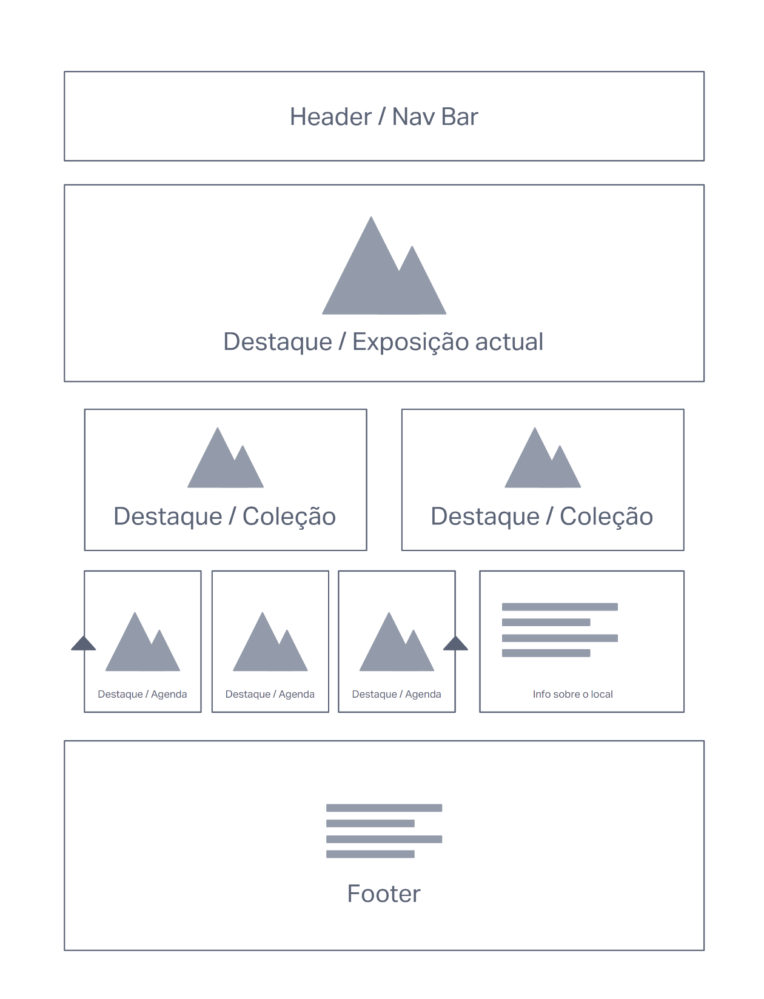
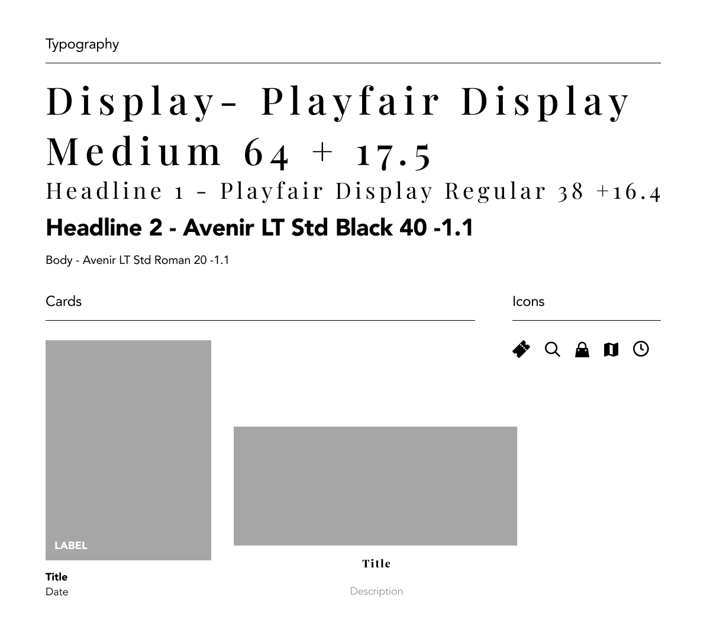
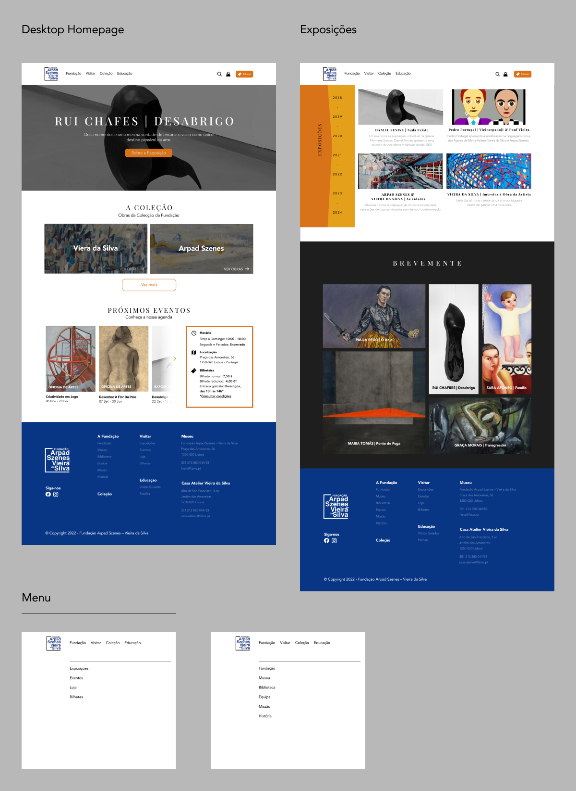
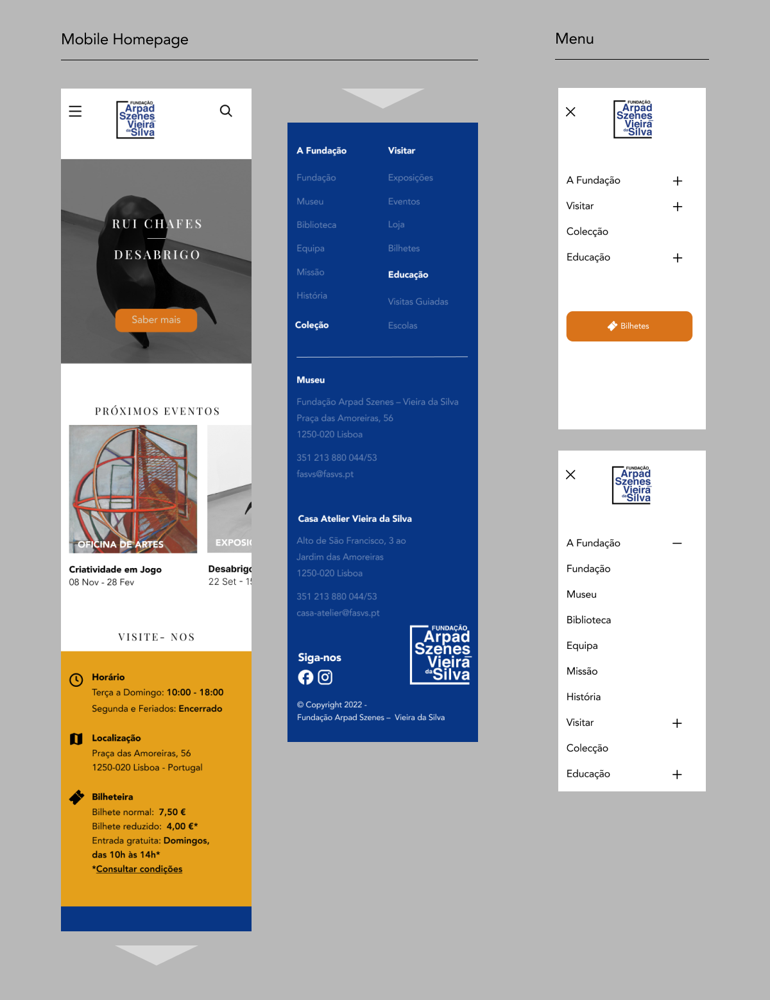

Redesign FASVS website
Redesign for the Fundação Arpad Szenes – Vieira da Silva website

Role
UX Research
Information Architecture
Visual Design
Tools
InVision
Figma
Team
Beatriz Oliveira
Diogo Terra Nova
Joana Costa
Duration
18 hours
Overview
In this case study, for the FLAGProfessional UX/UI Designer course, the workgroup was tasked with redesigning one of three museum websites. We chose Fundação Vieira da Silva e Arpad Szenes, due to its old-fashioned design. The proposed objectives were to create a desktop and mobile homepage and at least one page with an interactive prototype.
Objective definition
The redesign process started with identifying the objectives: a dynamic, user-friendly, organized website with a focus on ticket sales and news/event dissemination.
A schedule was created, where project tasks were divided into three phases: Discovery, Definition and Design. Each phase lasted 6 hours and all tasks were divided by 2 or 3 members.
Discovery
Visual and Functional Benchmark
To better analyze what needed improvement, we created a Visual and Functional Benchmark while noting what points to improve on the original site, as well as an analysis of the strengths of five other reference sites.
After analyzing the data obtained, the website elements that should be modified and implemented in the new site were outlined.
Negative elements
- There is no mobile version
- There is no variety in typefaces (only Arial typeface)
- Lack of space between elements (whitespace)
- Font is too small and lacks contrast with the background
- Weak visual brand (logo, colors, etc.)
- Sitemap is missing
- Very static, not very interactive
- Menu split in 2 parts, too many items
Elements to implement
- Homepage that highlights the latest exhibition
- Menu with few items, opening sideways
- Smooth transitions
- CTA button “buy” tickets
- Captivating and sleek design
- Ease of use
Information Architecture
Next, we focused on the Information Architecture of the website. The original navigation menu was analyzed and reorganized through card sorting among the group members. A lot of the items were removed, and instead would be grouped in new items for clarity.


Definition
Moodboard
In the second phase, we began creating a moodboard based on the paintings of Arpad Szenes and Vieira da Silva. Due to their characteristic style, they were considered invaluable inspiration for the website's graphic image, especially their colors.
Screenshots of design examples were taken from the benchmarking from the Discovery phase, color palettes based on paintings by the artists were also added to the moodboard.

Wireframes
Based on the analysis made and the elements chosen on the moodboard, wireframes were created, respecting 12-column grids for the desktop version, and 4-column grids for the mobile version.
When drawing the wireframe, it was already possible to create some dynamism with the composition of the site, which was previously lacking. A ticket sales CTA button was implemented to solve one of the focus points previously defined.


Ui Kit
For the typography, we chose two contrasting typefaces: a display typeface, Playfair Display, and Avenir Next as body type and some headlines. The icons were chosen to pair with the Avenir typeface style.
Two types of cards were created, one horizontal and the other vertical.

Design
High fidelity prototype
In the third and final phase, it was time to design the high-fidelity prototype which remained faithful to the wireframes, requiring only a few changes. The content used as a placeholder was that of the original site or related content. The colors, typography, and icons were used according to the moodboard and UI kit.


Interactive Prototype
To complete the prototyping process, we created interactions on the homepage with a side menu and a page about the foundation's exhibitions which contains a timeline. Some interactions were also created for the mobile version.
Final considerations
Throughout the project, the group successfully learned the basics of redesigning a website. If we had given each task to only one member of the group, I believe the output might have been more complete, but by working together in each task we were able to help each other and have a productive learning experience.